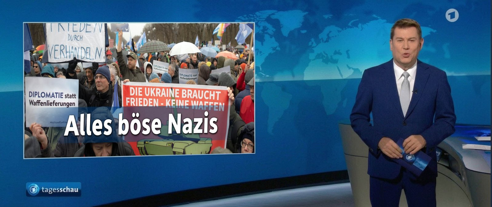

Ein Drittel, das nicht sein darf

Die AfD steht in den Umfragen so gut da wie nie. Im bundesweiten Schnitt liegt sie bei rund 28 Prozent, einzelne Institute sehen sie bei 29, die Union weit dahinter bei 21 bis 23. In Sachsen-Anhalt, wo am 6. September gewählt wird, kommt sie auf rund 40 Prozent, fast das Doppelte der CDU. Was in einer Demokratie eine schlichte Tatsache wäre, dass eine Partei Zuspruch hat, löst im politmedialen Betrieb keine Neugier aus, sondern Abwehr.
Und es ist kein deutsches Phänomen. In Österreich führt die FPÖ mit fast 38 Prozent, klar vor allen anderen. Sie hat die Nationalratswahl 2024 gewonnen und regiert trotzdem nicht: Eine Koalition der Wahlverlierer tat sich zusammen, einzig um die stärkste Partei vom Kanzleramt fernzuhalten. In Frankreich ist der Rassemblement National mit über 30 Prozent stärkste Kraft, doch seiner Spitzenfrau Marine Le Pen wurde per Urteil das passive Wahlrecht entzogen, mit sofortiger Wirkung. Sie darf schlicht nicht antreten. Und in Rumänien wurde eine ganze Präsidentenwahl annulliert, nachdem ein EU-kritischer Außenseiter die erste Runde gewonnen hatte, der Favorit von der Wiederholung ausgeschlossen, weil seine Wähler angeblich manipuliert worden seien.
Man sollte diese Fälle nebeneinanderlegen, denn hier zeigt sich das Prinzip. Le Pen wird wegen der Zweckentfremdung von Parlamentsgeldern von der Wahl ausgesperrt. Zur selben Zeit sitzt an der Spitze der Europäischen Zentralbank eine Frau, die 2016 wegen fahrlässigen Umgangs mit über 400 Millionen Euro Staatsgeld schuldig gesprochen wurde, ohne Strafe und ohne Karriereknick. Und die EU-Kommissionspräsidentin? Schon als Verteidigungsministerin stand sie in der Berateraffäre um Millionen-Aufträge ohne Ausschreibung, ihr Diensthandy wurde gelöscht, gerade als ein Untersuchungsausschuss die Daten als Beweis wollte. Verurteilt wurde sie nie, die Koalitionsmehrheit entlastete sie. Jahre später bescheinigte ein EU-Gericht der Kommission im Streit um ihre geheim gehaltenen Pfizer-SMS erneut einen Rechtsbruch. Zweimal verschwundene Dienstnachrichten, keine Konsequenz, dazwischen der Aufstieg an die Spitze Europas. Wer oben sitzt, wird durchgereicht und befördert. Wer die Wahlen gewinnt, aber nicht ins Bild passt, wird ausgeschlossen. In Rumänien lieferte Brüssel die Begründung für die Annullierung gleich mit, ein eigenes Verfahren gegen die Plattform, über die der unerwünschte Sieger seine Wähler erreicht hatte. Deutlicher lässt sich eine Intervention von oben kaum inszenieren.
Denn Demokratie hieße eigentlich, ein Wahlergebnis auszuhalten, auch wenn es den bisherigen Machthabern nicht passt. Stattdessen wird die unliebsame Mehrheit umkoalitioniert, vor Gericht gestellt, aus dem Amt geklagt oder gleich für ungültig erklärt. Das ist kein Betriebsunfall, das ist Methode, und sie wird mit zweierlei Maß betrieben.
In Deutschland beginnt die Ausgrenzung im Studio. Trotz ihres Zuspruchs kommt die AfD in den großen Sendungen kaum vor. Eine Auswertung von über 770 Talkshows und Interviewformaten der öffentlich-rechtlichen Häuser zählte für die Partei, die knapp ein Viertel der Bundestagssitze hält, ganze 1,47 Prozent der Gäste. Ein Viertel des Parlaments, keine zwei Prozent der Einladungen. Die „Brandmauer“, einst als Abgrenzung erklärt, ist zur faktischen Total-Ausgrenzung geworden. Wer so viele Menschen vertritt und so selten reden darf, wird nicht widerlegt, sondern stummgeschaltet.
Wo die Auseinandersetzung fehlt, wächst der Ruf nach dem Verbot. Ein Gutachten der Gesellschaft für Freiheitsrechte kommt im Sommer zu dem Schluss, die AfD verstoße gegen Demokratieprinzip und Menschenwürde, und sieht gute Chancen für ein Verbot in Karlsruhe. Die Grünen laden die anderen Fraktionen ein, ein Verbotsverfahren gemeinsam zu prüfen. Die Kampagnen-NGO Campact sammelt Unterschriften für ein sofortiges Verbot, dieselbe Szene, die auch die Blockaden gegen Parteitage mitträgt. Die Reihenfolge ist schwer zu übersehen: Erst verliert man gegen eine Partei an der Wahlurne, dann will man sie verbieten lassen. Das ist keine Stärke, das ist die Reaktion auf den eigenen Wählerschwund.
Um das zu rechtfertigen, braucht es ein Feindbild, und es wird geliefert. Dass die Partei und, mitgemeint, ihre Wähler rechtsradikal seien, Nazis, Verfassungsfeinde, ist zuerst das Framing der politischen Gegner. Die Leitmedien tragen es nicht nur weiter, sie treiben es an, machen die Zuschreibung zur Selbstverständlichkeit und die Gegenrede zum Tabu. Nur: Wer rund 28 Prozent im Bund, 40 Prozent in einem Land und in Österreich fast 38 Prozent wählt, ist kein Rand. Das ist ein Drittel und mehr, in Teilen die Mehrheit. Ein Drittel der Bürger zu Verfassungsfeinden zu erklären, ist keine Verteidigung der Demokratie, sondern ihre Aufkündigung. Es ist der Punkt, an dem nur noch eine Gesinnung als demokratisch gilt und alles andere als rechtsradikal diffamiert wird.
Dasselbe zweierlei Maß zieht sich durch alles. Wer die Parteitage der Stärksten blockiert und Reporter angeht, heißt Zivilgesellschaft; wer einen Parteitag abhält, heißt Gefahr. Wenn eine Ministerin Meldestellen gegen „Verschwörungsdenken“ einrichtet und morgens um sechs die Polizei vor der Tür steht, weil jemand einen Minister „Schwachkopf“ genannt hat, ist der Satz von den gleichen Regeln für alle nur noch Fassade. Und wenn die größte Oppositionspartei vom Verfassungsschutz beobachtet und aus Ämtern und Ausschussvorsitzen ferngehalten wird, sind die Minderheitenrechte der Opposition, an denen sich Demokratie misst, längst zur Verhandlungsmasse geworden.
Dass so viele so wählen, hat Gründe, die der Betrieb ungern hört, weil sie auf sein eigenes Versagen zeigen. In allen Untersuchungen ist die Migration das Thema Nummer eins: Wer sie für das drängendste Problem hält, traut die Lösung eher der AfD zu als jenen, die seit Jahren regieren. Dazu kommt der wirtschaftliche Abstieg, hohe Inflation, Energiepreise, wegbrechende Industrie, das Gefühl, dass Arbeit sich nicht mehr lohnt. Studien nennen Abstiegs- und Statusangst als zentrale Treiber. Und es kommt der Vertrauensverlust: Ein Kanzler, der im Wahlkampf die Schuldenbremse verteidigt und wenige Tage nach der Wahl mit dem alten, bereits abgewählten Parlament hunderte Milliarden neue Schulden beschließt, lehrt die Wähler genau eine Lektion, dass ein Wahlversprechen nur bis zum Wahltag gilt.
Vor allem sind es nicht „die Ränder“, die abwandern, sondern die Mitte. Rund 22 Prozent der neuen AfD-Wähler kamen zuletzt von der FDP, gut 21 Prozent von der Union, 18 Prozent von der SPD. Das sind keine Extremisten, das sind enttäuschte Bürgerliche, Handwerker, Angestellte, Rentner. Wer sie alle zu Nazis erklärt, sagt mehr über die eigene Ratlosigkeit als über die Wähler.